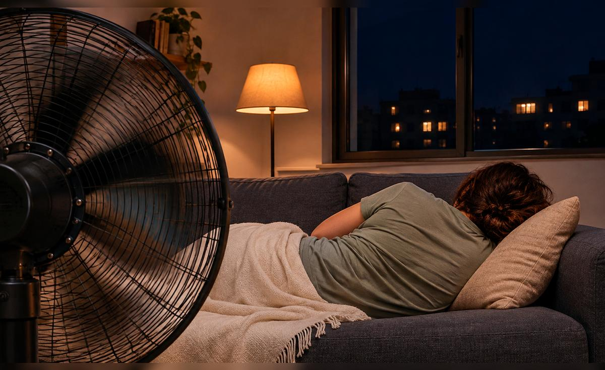
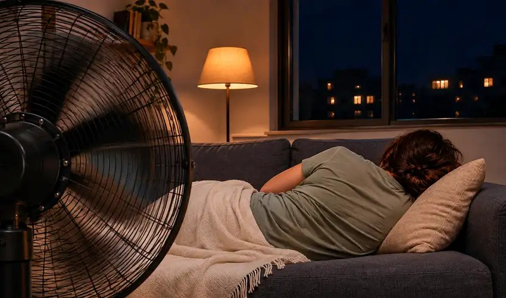

Especialistas explican que dormir con el ventilador encendido puede aliviar el calor, pero tambien provocar congestión nasal, sequedad, alergias y rigidez muscular si no se usa con precaucion.

El uso del ventilador en noches calurosas puede mejorar el confort, pero tambien traer molestias si la corriente de aire es directa y prolongada.
Cuando el calor aprieta durante la noche, encender el ventilador se convierte en una solucion inmediata para muchos hogares. La brisa que pasa sobre el cuerpo ayuda a evaporar el sudor y genera una sensacion de frescura que facilita conciliar el sueno. Sin embargo, medicos y especialistas en salud del sueno advierten que dormir con el ventilador encendido toda la noche puede tener efectos no deseados, especialmente en personas con alergias, asma, piel sensible u ojos secos.
La advertencia no significa que haya que dejar de usarlo por completo, sino que conviene conocer los riesgos y aplicar medidas simples para reducir las molestias. Segun explico William Lu, director medico de la clinica del sueno Dreem Health, a la publicacion Tom's Guide, "aunque los ventiladores mejoran la circulacion del aire, no lo filtran". Esa diferencia es clave: el aparato mueve el aire del ambiente, pero tambien puede desplazar particulas que estaban acumuladas en la habitacion.
Uno de los efectos mas frecuentes es la irritacion respiratoria en personas sensibles. El ventilador puede dispersar polvo, polen, caspa de mascotas y otras particulas que se acumulan sobre muebles, cortinas o las propias aspas del equipo. Cuando estas particulas quedan en suspension, es mas facil inhalarlas durante horas mientras se duerme.
En personas con rinitis alergica o asma, esta exposicion puede provocar estornudos, picazon nasal, lagrimeo, tos o sibilancias. Para quienes ya tienen vias respiratorias sensibles, la corriente de aire constante puede convertir una noche calurosa en una madrugada incomoda, con despertares frecuentes y sensacion de congestion al levantarse.
Otra molestia reportada es la tension muscular. Una guia de Healthline, revisada por el medico Raj Dasgupta, menciona la rigidez muscular como un posible efecto cuando la corriente de aire se concentra durante horas en una misma zona del cuerpo. Dormir con el ventilador apuntando directamente al cuello, la espalda o los hombros puede favorecer la sensacion de rigidez al despertar.
A esto se suma la postura durante el sueno. Segun MedlinePlus, una posicion incomoda tambien puede explicar el dolor de cuello matutino. En otras palabras, el ventilador no siempre es la unica causa, pero si puede contribuir cuando el aire frio incide de forma continua sobre musculos relajados durante la noche.

Dirigir la corriente de aire lejos del cuerpo y activar la oscilacion ayuda a reducir la rigidez muscular.
La exposicion continua al flujo de aire puede resecar las mucosas de la nariz y la garganta. Al disminuir la humedad en esas zonas, el cuerpo puede reaccionar produciendo mas mucosidad, lo que genera la sensacion de nariz tapada al despertar. Esta molestia es comun en ambientes secos o cuando el ventilador funciona a alta velocidad durante toda la noche.
El especialista en medicina respiratoria Praveen Bhatia explico a Tom's Guide: "Esto puede causar congestión nasal, dolor de garganta o sequedad en la boca al despertar". Para quienes duermen con la boca entreabierta, el efecto puede ser aun mayor, porque el aire acelera la perdida de humedad en la garganta.
La corriente directa y prolongada tambien puede resecar la piel, especialmente en personas que ya padecen eccema o tienen piel sensible. En el caso de los ojos, el flujo de aire puede acelerar la evaporacion de las lagrimas y aumentar la irritacion, de acuerdo con informacion de Mayo Clinic. Quienes usan lentes de contacto o sufren de ojo seco suelen notar mayor molestia al despertar.
Mantener la habitacion limpia y con humedad adecuada es clave para un descanso reparador.
Los especialistas recomiendan adoptar medidas sencillas para mantener el alivio del calor sin afectar la salud:
Si al despertar se repiten sintomas como congestion persistente, tos, silbidos al respirar, irritacion ocular intensa o dolor muscular que no mejora, es recomendable consultar a un profesional de salud. En personas con asma, alergias respiratorias o enfermedades de la piel, ajustar el uso del ventilador puede marcar la diferencia entre descansar bien y pasar una mala noche.
En conclusion, el ventilador sigue siendo un aliado util frente al calor, pero su uso inteligente es fundamental. La clave esta en la distancia, la limpieza del equipo, la direccion del aire y el control del tiempo de funcionamiento. Con estos cuidados, es posible dormir fresco sin sacrificar la salud respiratoria ni el bienestar general.